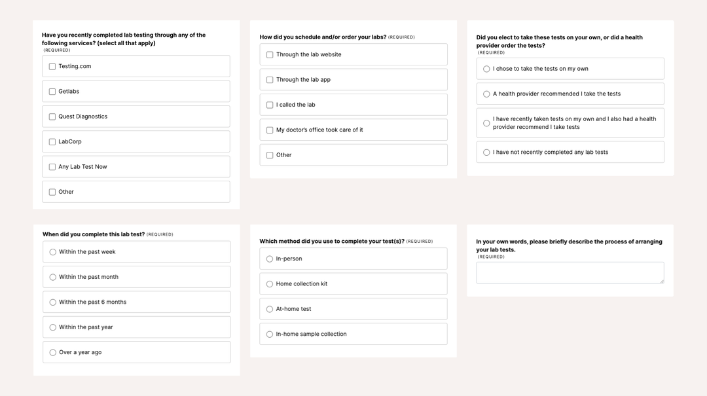
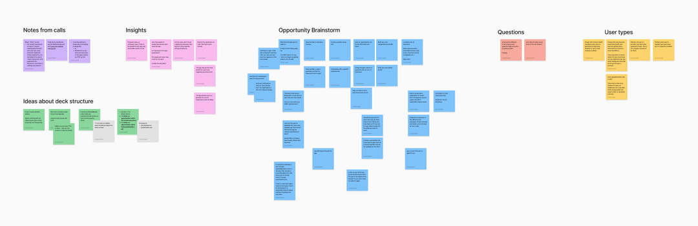
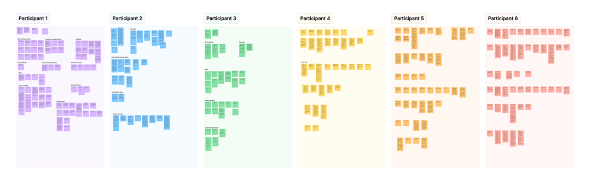
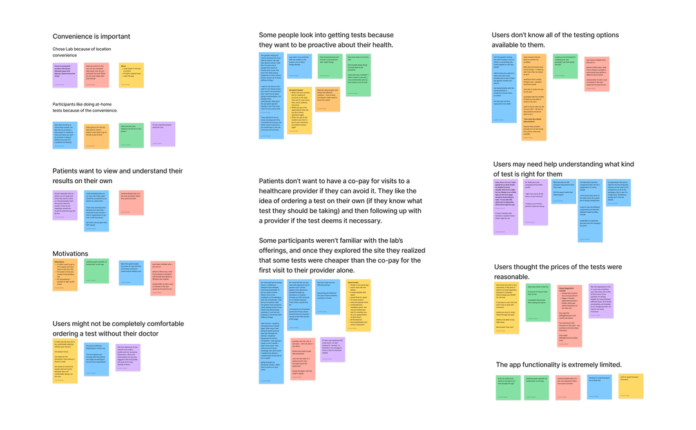

Medical Laboratory User Research
A user research study to better understand the user experience around lab testing at a medical laboratory company.

Background
I led a user research study to gain insight into users' behaviors and their experiences with a medical laboratory company. I conducted interviews to understand users' likes and dislikes of the website and mobile app in an effort to uncover opportunities to improve the user experience. Details have been removed to protect the client's privacy.
Challenge
I was challenged with a tight timeline to recruit participants, conduct interviews, synthesize findings, and present the opportunities to leaderships.
Objectives
- Gain a better understanding as to why individuals choose to get lab tests at the medical laboratory company.
- Identify pain points and opportunities for improvement in the process of completing lab tests and receiving the results.
- Determine if users understand the difference between their lab services.
- Test the usability of the desktop and mobile versions of the sites.
- Better understand the motivations for people who choose to get labs done when the labs are not prescribed by a healthcare provider.
- Identify opportunities for mobile app enhancements.
- Identify how the competitor experiences compare.
Methodology
I used a typical remote usability testing methodology, with one moderator and one participant as the active speakers, as well as a notetaker. Each interview was an hour long session moderated by a facilitator over Zoom. All participants were compensated for their time and participation.
Target Audiences
Using the recruiting tool UserInterviews.com, I identified up to 6 participants who were customers of the medical laboratory company.
- Individuals who have recently utilized the website to get tests done that have been ordered by a health provider OR ordered their own tests.
- Individuals who have recently used the mobile app to get tests done that have been ordered by a health provider OR ordered their own tests.
Other criteria:
- US-based, approx even split across regions
- Gender - approx even split
- Race - approx even split
- Age - 18+.
- Other demographic characteristics (marital status, HHI) are collected by User Interviews' screener but were not be used as a basis for participant selection.
Recruitment and Screener

Discussion Guide
A discussion guide was created to facilitate conversation with the participants and focused on gathering insights based on the objectives of the research study. The following is a sample of some of the questions and tasks:
Warm-up questions
- Did your healthcare provider recommend the medical laboratory company, or did you choose it? Was this test specifically ordered for you, or did you decide to do this test on your own?
- Have you used other lab testing services in the past? This could be for labs ordered by healthcare providers or tests you decide to take on your own which includes tests like at-home food sensitivity tests, covid tests, blood type tests, etc.
- What are 3 words you would use to describe the medical laboratory company?
Website Questions/Tasks
- What information on the homepage is most important to you? (Top 3)
- Is there anything missing on the homepage that should be there?
- Does the homepage reflect the brand? (Think back to the 3 words you used to describe the medical laboratory company)
Mobile app Questions/Tasks
- How often do/did you use the mobile app?
- What is the most recent reason that brought you to the mobile app?
- Do you remember if you were able to accomplish your task? If yes, how would you describe that experience? If not, why not?
Wrap-up Questions
- What do you like most about the website/app?
- What do you dislike about the website/app?
- Anything else you would like to tell us about your experience with the medical laboratory company?
Synthesis
During the interviews, notes were taken in a Google Sheet, so they could be easily transferred into FigJam for synthesis. The notes were converted to sticky notes, which allowed me to start organizing them according to their patterns and trends.
Initial Thoughts and Findings

Participant Findings

Synthesis of Findings

Findings
A full report of the findings was created and then presented to company leadership. Some of the key findings and themes can be found below:
Key Findings
- Convenience is very important. The ability to complete tests at-home without having to go into a physical location prompted positive reactions from participants because they could complete the tests in their own time without having to schedule an appointment.
- Appointment timing was a consideration for participants who were required to be fasting prior to their test. They were more willing to travel to a farther location with availability in the morning, rather than continue fasting until the afternoon.
- Whether patients are having tests ordered by healthcare providers or they're ordering them on their own, they want the ability to view and understand their results on their own.
- Cost is an important factor for patients. Patients don't want to have a copay for visits to a healthcare provider if they can avoid it. They like the idea of ordering a test on their own (if they know what test they should be taking) and then following up with a provider if the test deems it necessary.
Motivations
- Patients experiencing health problems and their provider ordering diagnostic tests.
- Patients who regularly keep up with chronic conditions.
- Patients who need to track results from tests and compare to previous tests (i.e. getting thyroid tests done every 3 months).
- Patients who are proactive about their health and want to get tests done for their own knowledge (i.e. at-home food sensitivity tests).
- Patients who are concerned about potential future health problems (i.e. testing for a cancer gene).
- Patients who are simply curious (i.e. at-home baby gender tests).
Opportunities
- People don't know what tests are available to them and what technologies exist when it comes to taking control of their health, so the website and mobile app should help users discover what tests are right for them.
- Make the app more useful for users who need to frequently get tests done. Ability to favorite a location and see frequent orders to make it easier to repeat past tests.
- One time users don't really see the need to download the app, so what features would entice them to at least try it? Wait times? Push notifications? Bill pay?
- More robust location information (hours, wait times, what labs can be completed, directions to find the entrance, etc.).
- Easy to understand explanation of results. Don't necessarily need to speak with a provider if the explanation makes sense. Include visuals/videos when possible, so users don't need to rely solely on text explanations.